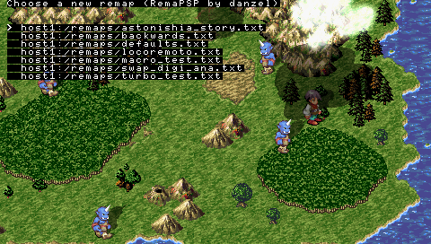

I’m working on something new and have been for a while.
Hint: It doesn’t have keyboard input.
Expected release date: 20th August, or slightly before.
(Wow that cooincides with the NeoFlash competition)
I’m working on something new and have been for a while.
Hint: It doesn’t have keyboard input.
Expected release date: 20th August, or slightly before.
(Wow that cooincides with the NeoFlash competition)
Thanks to ZX-81 there is now IR Keyboard support for afkim.
Head over to his site to grab it
I haven’t had time to check it into SVN yet, Will do when i get some time…
Minor update for AFKIM.
Probably the last release (other than bugfixes if/when required and a piKey version when I get a keyboard) as I don’t use AFKIM anymore (DSLinux + ssh + screen = FTW)
Don’t forget that afkim is open source, check the readme for the SVN location. If you do make some changes then email me and I can integrate em and make another release or hook you up with a SVN account.
Changelog:
Resolver shouldn't lock up anymore.
Jabber account adding.
Removed Splash.
Download Links:
OE Version
1.5 Version
[EDIT] Download links updated, thanks to LOCOSP for pointing out I forgot to update an image!
Enjoy as always.
My next project will be something that doesn‚Äôt need character input, if I ever decide to finish and release it üòõ
I wanted to view a PDF on my PSP, but unfortunately the PDF was full of images so the usual viewer bookr didn’t want to load it. Luckily I managed to figure out how to convert the PDF into JPEGs so I could view them. Since I hadn’t found a guide in my searches, here is a rough guide of how I did it.
The Tool of choice for this exercise is ghostscript, in particular the command line component ‘gs’. Ghostscript is a PDF/PS interpreter, available on linux and windows (SF.net Download). The magical command line I used was:
gs -sDEVICE=jpeg -dJPEGQ=95 -dGraphicsAlphaBits=4 -dTextAlphaBits=4 -dDOINTERPOLATE -sOutputFile=m_%d.jpg -dSAFER -dBATCH -dNOPAUSE -r57x58 M.pdf
What does this all do?
Anyway, so you run that and suprise suprise you get alot of images, ripe for viewing üôÇ Enjoy.
mafia1ft kept hassling me for the code, so here it is.
http://OFFLINEZIP.wpsho/remapsp/remapspsrc.zip
Copy/pasta of the README_DEV:
RemaPSP is released under GPL. (other than blit.c which is under the BSD license)
The code is well documented.
RemaPSP is a good example of function hooking, I’m not sure if this works much different in 3.03OE but I suspect it doesn’t.
Check main.h there are lots of things that can be configured in there, including the wifi play.
What is wifi play you ask? Well, when I made RemaPSP I added some functionality to control your psp over the wifi, however it would only work through the 1.5 BootstrapLoader and I couldn’t be bothered writing a good windows client for it so I never released it.
The protocol is really simple, send a 4 byte udp packet to port 14567 on the PSP and it will be or’d into the pressed buttons value.
There is an example client in the client dir, it is incredibly simple however (only sends one button press)
Enjoy.
danzel – danzelatlocalhostdotgeekdotnz
I decided I’d learn a bit more on how emulators work, and what better way to do so than to write one.
So I wrote a CHIP8 Emulator, it took about 3 evenings of coding to get it all working 100%, I had a few mix ups along the way but in the end I managed to get all of the standard CHIP8 games working, with blinky being the last and maze being the first.
If you are planning to make your own chip8 emulator I recommend you read the documentation included with David Winters CHIP8 Emulator: http://www.pong-story.com/chip8/
The first game you are likely to get running correctly is maze, it definitely requires the least working opcodes.
I’ve used SDL to implement my emulator, it provides easy to use framebuffer access and input.
And lets round off with a pic:

Oh yeah, if anyone wants the code I could upload it, bit of a mess tho üôÇ
I’ve made a bot based on the irc++lib codebase to make some use of it and to replace the eggdrop bots that were looking after the channels I hang in. eggdrop has served them well but I really don’t know tcl (the scripting language used in eggdrop), so I decided I would integrate php into irc++bot as the scripting language.
This has been very successful so far with an auto-op script being simple to make, and I‚Äôve been supplied with a php class to do searches and grab movie details on the site imdb.com which is very useful (Thanks Randy!). I‚Äôm now in the position where I can easily create new functionality for the bot, which I plan to do üôÇ
MANY THANKS to those who have created the embed SAPI for PHP, it is awesome to work with üôÇ and made this a breaze to implement.
Come check it out in #hamlan on undernet if you want to see it in action nicks starting with _’s are bots.
Messed with wordpress, I think it works still.
Added some new spam protection which hopefully works <_ i been doing some work on irc which is the library that powered afkim and peldet phpirc if you are one of lucky few who have seen it added multiple channel support but don any client software written to test or use yet : lol. a better coming psp soon signs point yes.>
This is my entry for the neoflash competition.
Ever got annoyed at a PSP game because it had bad controls?
Well be annoyed no more! RemaPSP is here to save the day!
RemaPSP is a program to remap the PSP controls. It also supports turbo (Rapid Fire!) and Macros.
You can remap any of your psp controls to any other. Including taking input from the remote.
It works with Devhook and has a launcher for 1.5 homebrew.
Check the included readme for install, usage, modding instructions.
I plan to release the source code later this week when I have some more time.
If any of the Devhook cheat engine coders want to add this to their system, drop me an email üôÇ
Thanks to Haeal and Ayb4btu for the eboot art and to Lordsturm + Macca for their Beta testing help.


Just upgraded wordpress to 2.0.3 (finally)
Hopefully I didn‚Äôt break too much üôÇ